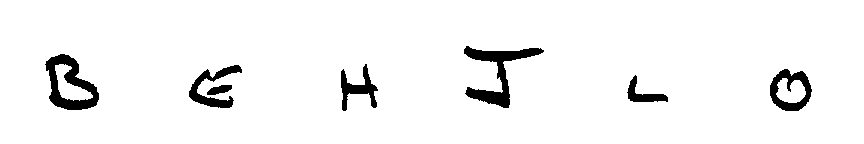

Paper Bloom / A six letter sample
Handwriting, ready to use.
Turn handwriting templates into editable Latin, Han and kana font subsets.
HELLO JOB
3.3 kBfor this six letter TTF
A measured sample export, checked with Fontconfig and LibreOffice.
Paper to fontpublic domain handwriting

Six real letter crops from NIST SD19, no full form included
Edit each glyph / preview / export
Generated from the handwriting
HELLO JOB
Review outlinesTune spacingExport TTF / WOFF2